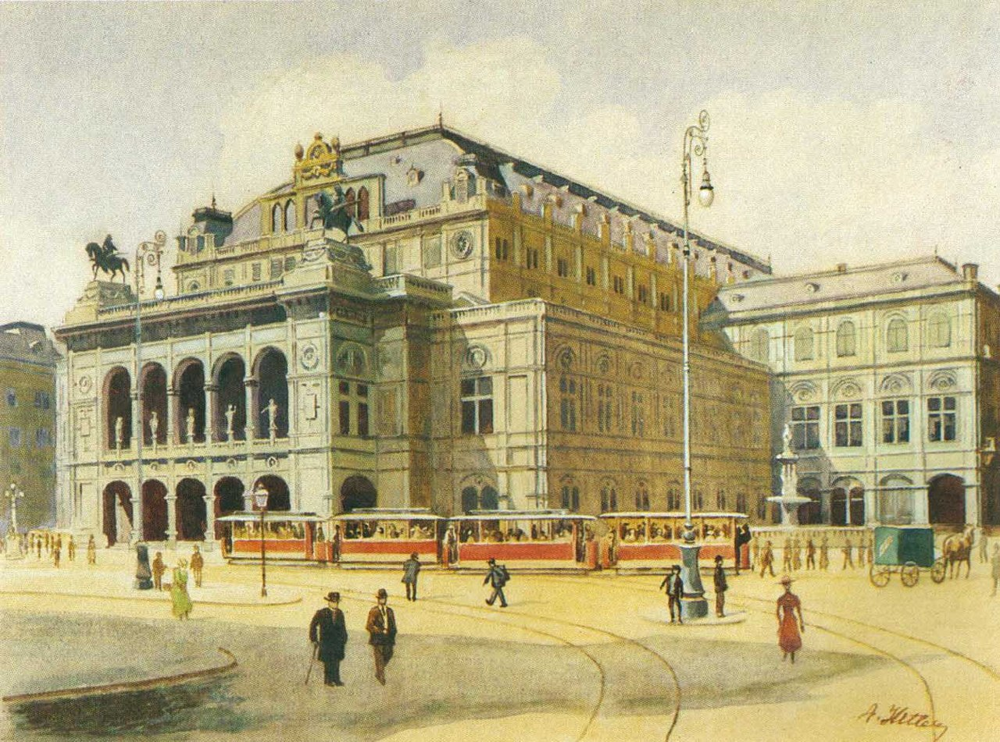
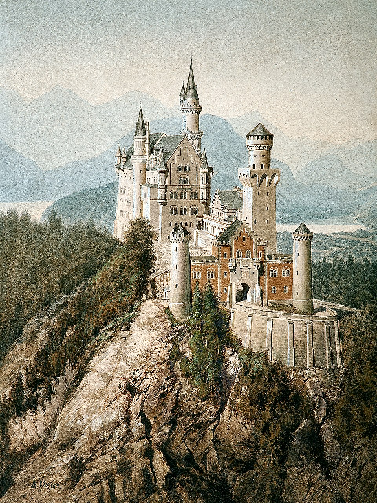
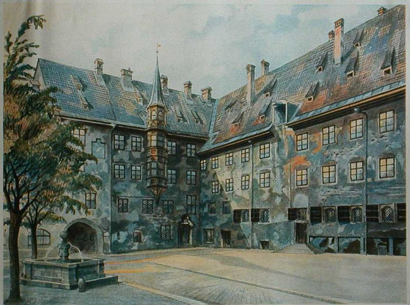

Art and Culture in Germany
Germany has one of the richest cultural and artistic heritages in the world. From the classical masterpieces at Berlin's Museum Island to the cutting-edge contemporary art of the Documenta festival in Kassel, the country offers an extraordinary range of artistic experiences.
Germany is also the birthplace of the Bauhaus movement — one of the most influential art and design schools in history — and home to countless world-class concert halls, opera houses, and theatres.



Top Museums and Galleries
Pergamon Museum — Berlin
One of Germany's most visited museums, housing the magnificent Pergamon Altar, the Ishtar Gate, and the Market Gate of Miletus.
Deutsches Museum — Munich
The world's largest museum of science and technology, with over 73,000 exhibits across 28,000 square metres of floor space.
Städel Museum — Frankfurt
One of Germany's most important art museums, with a collection spanning 700 years from the early 14th century to the present day.
Kunstmuseum Stuttgart
A stunning modern gallery building in central Stuttgart, housing an impressive collection of 20th and 21st century art.
Bauhaus Museum — Weimar
Celebrates the centenary of the Bauhaus movement, which was founded in Weimar in 1919 and revolutionised modern design.
Documenta — Kassel
One of the world's most prestigious contemporary art exhibitions, held every five years in the city of Kassel.